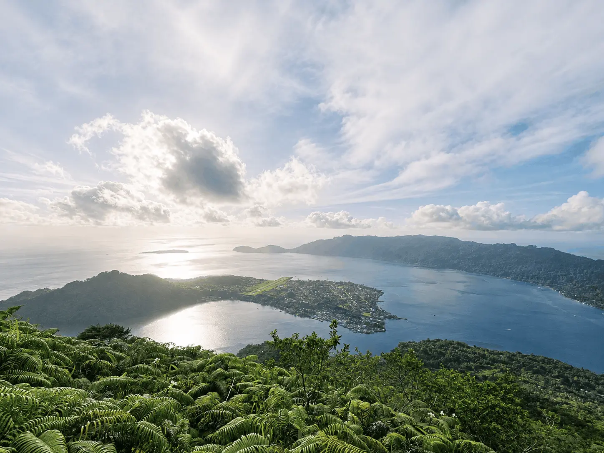
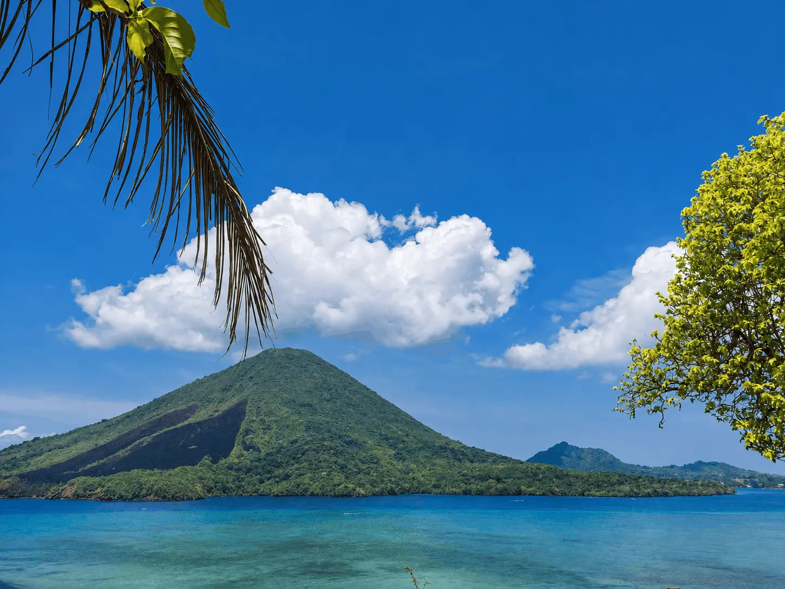
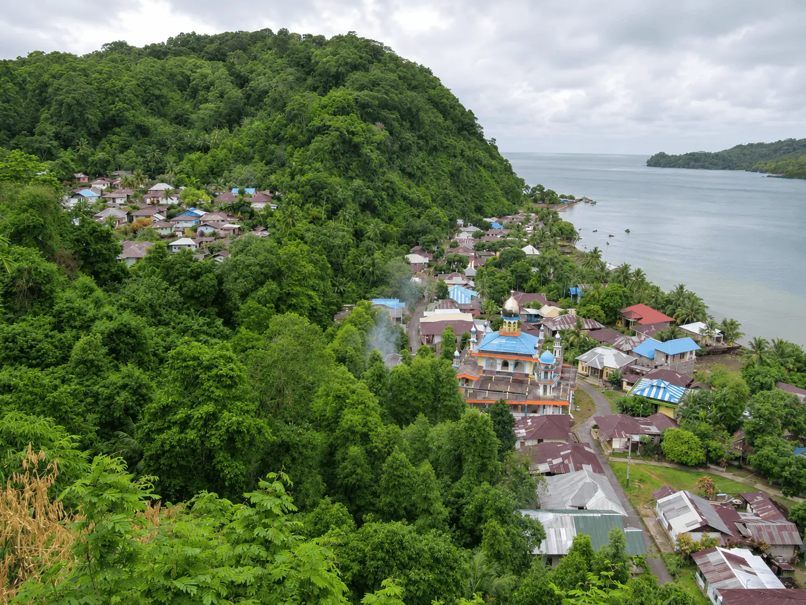
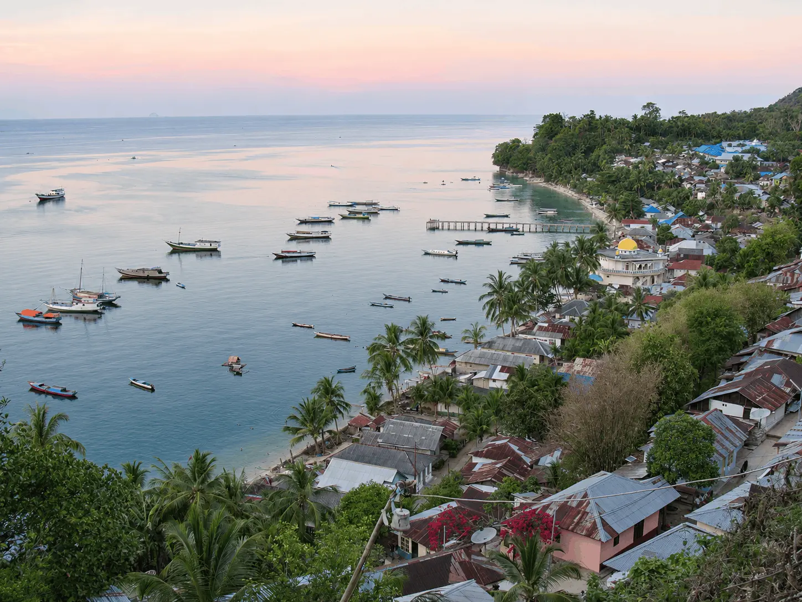
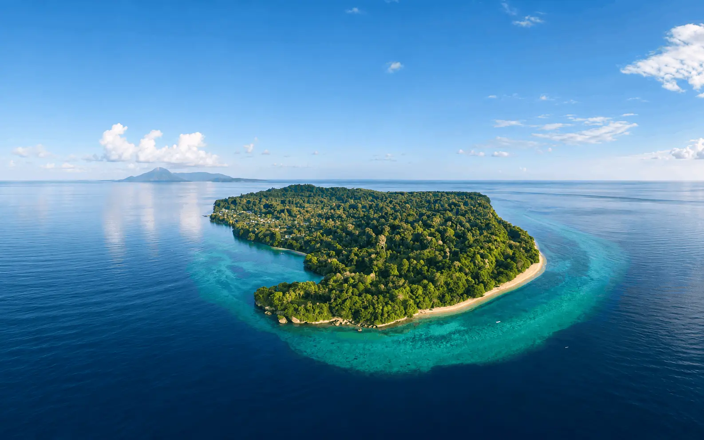
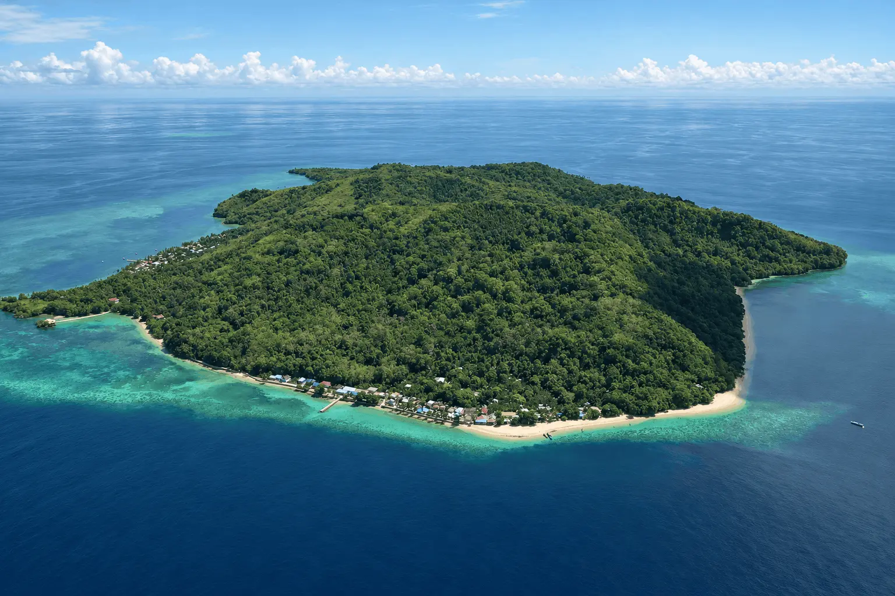

Island Map
Choose an island to see what’s worth a stop.

Banda Neira
Walk from the Dutch forts to the houses where Mohammad Hatta and Sutan Sjahrir lived in exile. The stops are all in Neira’s old town.
A walk through Neira
-
Benteng Belgica
Look across the harbor to Gunung Api from the hilltop fort.
-
Benteng Nassau
Stop at the ruins of Neira’s other Dutch fort.
-
Rumah Pengasingan Bung Hatta
Visit the house where Mohammad Hatta lived in exile.
-
Rumah Sutan Sjahrir
Follow Sjahrir’s years in exile at his former home.
-
Rumah Budaya
Browse a small collection on Banda’s spice trade and local history.
-
Gereja Tua Banda
Take a look at the old church on the same walk through town.

Gunung Api
The cone across Neira’s harbor is an island of its own. In 1988, lava ran down its slopes into the sea. That stretch of coast is now a dive and snorkel site.
The cone and its lava coast

Banda Besar / Lontor
Head to Lonthoir for the nutmeg groves, then look back toward Neira from the hill above the village.
A stop in Lonthoir

Pulau Run & Nailaka
Nutmeg put little Run on the same page as Manhattan in the 1667 Treaty of Breda. Pair the village with a boat stop at Nailaka, the smaller island just offshore.
Two stops by boat

Pulau Ai
On Ai, split your time between the old fort in the village and a reef stop. The southwest coast gives you a second option if you’re heading out with a dive operator.
The village and the reef

Pulau Hatta
Hatta sits southeast of the main cluster. Its north coast and nearby Skaru Atoll are distinct dive stops. Tell your operator whether you want to snorkel or dive before you set out.